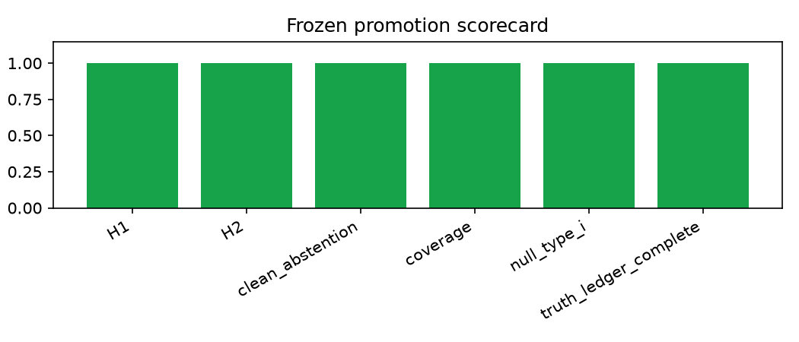
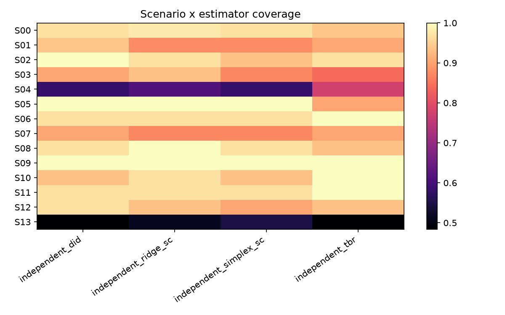
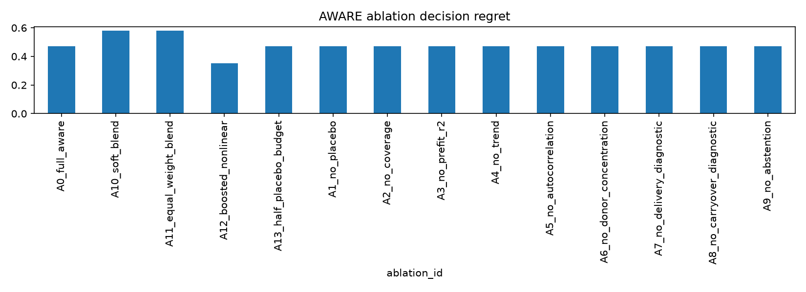

Protocol AWARE-GEO-e52a8660a97ef174. Evidence is simulated unless labeled external/measured.
The result is narrow: 483/500 selections were fixed DiD; compound-OOD coverage was 0.467. Protocol 001 is invalidated and excluded.



Canonical sources: Parquet under evidence/, DuckDB at artifacts/results.duckdb, and the claim ledger in reports/CLAIM_LEDGER.md.